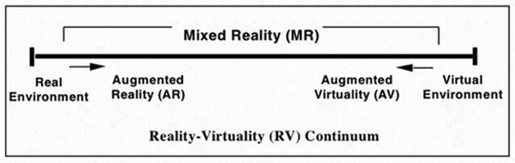
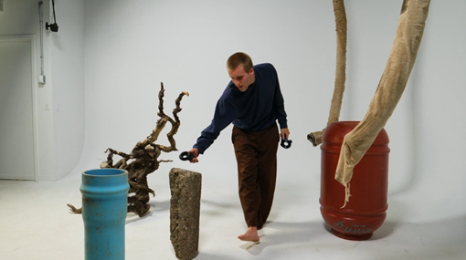

A Framework for the Design and Analysis of Mixed Reality Musical Instruments
Abstract
In the context of immersive sonic interaction, Virtual Reality Musical Instruments have had the relative majority of attention thus far, fueled by the increasing availability of affordable technology. Recent advances in Mixed Reality (MR) experiences have provided the means for a new wave of research that goes beyond Virtual Reality. In this paper, we explore the taxonomy of Extended Reality systems, establishing our own notion of MR. From this, we propose a new classification of Virtual Musical Instrument, known as a Mixed Reality Musical Instrument (MRMI). We define this system as an embodied interface for expressive musical performance, characterized by the relationships between the performer, the virtual, and the physical environment. After a review of existing literature concerning the evaluation of immersive musical instruments and the affordances of MR systems, we offer a new framework based on three dimensions to support the design and analysis of MRMIs. We illustrate its use with application to existing works.
Author Keywords
Music, Mixed Reality, Virtual Reality, Virtual Musical Instrument, HCI
CCS Concepts
•Applied computing → Sound and music computing; Performing arts;
•Human-centered computing → Mixed / augmented reality;
Introduction
In 1992, Jaron Lanier debuted The Sound of One Hand, a live musical performance in virtual reality [1]. Equipped with a Head-mounted Display (HMD) and single DataGlove, he played a selection of virtual musical instruments using only one hand. A feat made possible by virtualization, it paved the way for a new field of research in immersive sonic interaction.
While past NIME researchers have focused on Virtual Reality Musical Instruments (VRMIs), interfaces for Mixed Reality (MR) have yet to receive the same attention. VRMIs almost necessarily involve cybersickness, a condition with a 40–60% susceptibility rate that disproportionately affects females [2][3]. While the effects of cybersickness can be mitigated through careful design practice, such considerations often place significant restrictions on movement, limiting the potential of the VR medium. High-end equipment with lower latencies, mechanical optical adjustments, and a wider field of view can also help with cybersickness, although the cost of such systems is comparable to current HMD-based MR technologies.
Motivated by the increasing accessibility and demand for MR experiences, as well as the opportunities for expressive interfaces that MR affords, we delve into a world that is driven by technological determinism and seek to establish space for user experience. In this paper, we explore existing VRMI evaluation frameworks and design principles. We consider the affordances provided in MR systems and compare these to their VR counterparts. We define a new wave of virtual instrumentation as Mixed Reality Musical Instruments (MRMIs), which differ in fundamental ways from their VRMI predecessors. Finally, we offer a framework that enables NIME practitioners to analyze and design MRMIs through a common shared language. Rather than replace these existing frameworks, we seek to both refine and extend them into the realm of mixed user-reality-virtuality interaction. We apply this framework to analyze existing musical performances and applications in MR.
Background
Mixed Reality (MR), as defined by Milgram and Kishino, exists as the spectrum between the two extremes of an entirely physical world and entirely virtual world [4]. They illustrate this with the Reality-Virtuality (RV) Continuum (see Image 1), which defines a Mixed Reality environment as one in which real-world and virtual world objects are presented together within a single display, that is, anywhere between, but not on, the extrema of the virtuality continuum. Within the continuum, Augmented Reality (AR) refers to any case in which a real environment is augmented by virtual objects. Conversely, Augmented Virtuality (AV) describes a virtual environment wherein elements of reality are inserted, though this is less generally discussed.


Milgram and Kishino’s RV Continuum [4]
According to the framework, VR is not part of MR while AR is considered a subclass of MR. This denomination is followed by Azuma et al., who proceed to outline AR systems by their incorporation of three key characteristics: the combination of the real and virtual, real-time interactivity, and 3D registration [5]. VR, on the other hand, is an environment in which the user is fully immersed and able to interact with a completely synthetic world [4]. We note that Extended Reality (XR) is a commonly used umbrella term for AR, MR, and VR.
While the difference between AR and VR is typically well-understood, the difference between AR and MR is relatively ambiguous as the terms are often used interchangeably. Interviews with domain experts [6] concluded in contradicting notions on what constitutes MR, with statements such as “the same as AR”, “the RV continuum”, and “technology-bound”. One perception of MR is as an evolution of AR, distinguished by an advanced spatial understanding and interaction between users and virtual objects, and virtual objects with the environment. However, this idea may lead to the conclusion that MR is constrained to the hardware that is able to deliver this functionality. As such, associating definitions of XR systems with specific technologies can be problematic, though it is a practice that often appears in literature. The RV Continuum itself acts as a foundation for most AR/MR research, yet it is based on the idea that all MR experiences are best represented by their method of display. Indeed, the vast majority of XR research employs the use of an HMD. Many researchers have since moved on from this display-based taxonomy, expanding its definition to include other modalities of sensing, such as audio, proprioceptive, haptics, taste/flavor, and smell [6][7].
To this end, it may be useful to examine designations of MR that seek to remove technology as the foundation of their taxonomies. Rouse et al. [8] offer a new class of MR systems, denoted as MRx to mark the importance of user experience. MRx applications are designed to be engaging experiences, rather than instruments for completing tasks. They are distinguished by three main qualities:
hybrid
deeply locative and often site-specific
esthetic, performative, and/or social
First, MRx applications are hybrid in the sense that they seek to combine the physical and virtual effectively for the sake of the experience, whether it is seamless integration or radical separation. Second, all MR applications are in some way location-based or location-aware. The difference is that for MRx, relation to location is fundamental to the experience, either esthetically or culturally. In this sense, these experiences can be locative, geolocated in a predetermined space, or site-specific, integrated into a place.
For Bekele [9], MR is defined through its capacity to create a real-virtual environment that enhances our perception of both environments. Users, virtual components, and the real world may all interact in this environment, establishing a user-reality-virtuality interaction and relationship space. Here, MR is discerned from AR through the equality of the real and virtual, where both environments benefit from each other’s elements.
So far, we’ve discussed Mixed Reality as it pertains to the conceptual frameworks that seek to define it. There is no single definition of MR, and understanding is generally based on context. For the purpose of this paper, we offer the following working definition: MR is a real environment augmented with virtual objects (in effect, AR) distinguished by an increased emphasis on user and virtual object interaction with space.
Related Work
To reach our own definition of an MRMI, we offer a brief history of virtual instrumentation. A Virtual Musical Instrument (VMI) is a musical instrument with a virtual control surface that is influenced by the physical world in some way [10]. With the emergence of accessible Virtual Reality devices, a subclass of VMIs appeared, known as VRMIs. These include a computer-generated visual component mediated by an HMD or other types of immersive visualization interfaces [11]. One such example of a VRMI is the Cybersax, the most ergonomically complex instrument showcased in Lanier’s The Sound of One Hand performance [1]. It allowed the musician to play a melody over a large range, while at the same time controlling the overall mix of the music, as well as its parameters, timbre, volume, and placement of tone. Lanier notes that the purpose of this was to allow the performer to play music in an intensely gestural style.
There exists a limited selection of frameworks for evaluating VRMIs. In 2016, Serafin et al. outlined a set of nine principles for designing VRMIs [11].
Design for Feedback and Mapping
Reduce latency
Prevent cybersickness
Make use of Existing Skills
Consider both Natural and "Magical" Interaction
Consider Display Ergonomics
Create a Sense of Presence
Represent the Player’s Body
Make the Experience Social
Based on these principles, a three-layered evaluation framework was proposed. The first layer deals with interaction modalities, such as input and output, as well as perceptual integration and mapping dependent on users' sensorimotor and cognitive capacities. The second layer is a VR-specific layer that caters to cybersickness, virtual body ownership and representation, and presence. Finally, the third layer tries to assess the objectives, methods, and experiences of users.
Another direction for evaluation pertains to scenography, the study of a performance's visual, experiential, and spatial composition. Berthaut et al. [12] redefine scenographic considerations as they pertain to performance setups that include VR systems. They refer to these systems as Immersive Virtual Musical Instruments (IVMIs), which rely on the depiction of sound processes and parameters as 3D objects in a Virtual Environment (VE). They offer six dimensions for the scenography of IVMIs, quoted from [12] below.
Musician Immersion - how well the musician(s) can perceive the VE and therefore the instrument
Audience Visibility - how well the musician(s) can perceive the audience
Audience Immersion - how well the audience perceives the VE and therefore the instrument
Musician Visibility - how well the audience can perceive the musician(s)
Gestures Continuity - how the musical gestures performed by musicians in the physical space are connected to the graphic feedback of the instrument's metaphor, as perceived by the audience
From Virtual to Physical - how the virtual and physical spaces are merged
From VR to MR
To further differentiate our class of proposed MRMIs from VRMIs, we emphasize MR as an experience where the user is not fully immersed in a virtual environment. As such, many of the themes from literature on VRMIs and IVMIs lose relevancy. We explain three such themes as follows.
Cybersickness
The term cybersickness was proposed by McCauley and Sharkey in 1992, describing the interim side-effects caused by virtual reality immersion [13]. This is sometimes referred to as “simulator sickness”, which was initially coined to describe the effects induced by simulators, where the user is grounded in the real world with immersive elements, but has since been adapted to non-simulator virtual experiences. One study found that the total severity of cybersickness was approximately three times greater than that of simulator sickness [14]. There is currently no agreement on which terminology should be used with respect to modern VR technology [3]; in general, this paper will use the term cybersickness going forward.
Cybersickness symptoms include disorientation, headaches, sweating, eye strain, and nausea. The most commonly accepted explanation for this phenomenon is that cybersickness occurs as a result of conflicting information from the visual and vestibular senses; this is termed Sensory Conflict Theory. Display latency, flicker, calibration, and ergonomics are all thought to influence cybersickness [15]. Susceptibility to cybersickness may also be affected by individual differences such as gaming experience and sex [3][15][16].
As such, VRMI developers are encouraged to minimize accelerations and decelerations, should the user need to move virtually while being physically stationary [11]. However, as AR and MR systems present content in a more realistic and embodied context, such conflicting factors may be considered negligible. Studies have shown that the inclusion of real-world visual references maintains the observers' regular stability conditions, hence significantly lowering sickness effects [17]. In [18], the use of the simulation sickness questionnaire (SSQ), a standard in research [19], found that there is almost no simulator sickness when using the Microsoft HoloLens. Though, the study did not report any differences based on sex. Therefore, while we do not dismiss the potential for cybersickness in MR, we argue that it is less cause for concern and not a notable factor NIME practitioners should consider when developing XR instrumentation.
The Player’s Body
In VR systems, individuals are unable to see their own body portrayed in the virtual environment unless the real body is monitored and mapped to a virtual representation [11]. This concept, known as virtual body ownership (VBO), is a key area of study for both VR researchers and psychologists alike, as it contributes to the wider field of body ownership illusion. In recent years, VR has been used to explore virtual body ownership and agency, under the term virtual embodiment [20][21]. Where agency refers to the notion that a person recognizes themselves as the cause of the actions and movements of that body.
However, virtual body ownership can have transient effects on user attitudes and behavior in the context of musical performativity due to differences between the real and virtual body [21]. This phenomenon is often absent from MR experiences, as the user’s body is typically visible, and a key component of interaction. While there may be instances in which a virtual body is desired, such as for telepresence purposes [22], representing the player’s own body should be of less concern.
Presence
Presence, the sense of “being there”, is a phenomenon of human experience that occurs in the context of technologically mediated perception. It can be defined as the combination of two orthogonal components: place illusion and plausibility [23]. The former refers to the quality of having a sensation of being in a real place, while the latter refers to the illusion that the scenario being depicted is actually occurring. Research on measuring presence in AR and MR environments is still exploratory [24], though work has been done to create a standardized measurement, such as the Mixed Reality Experience Questionnaire (MREQ) [25].
In order to create a convincing sense of presence, perceptual consistency is key [26]. In VR, this is often a challenge, as providing a unified sensory model can be difficult, especially when motion is involved. As such, research has shown an inverse relationship between simulation sickness and presence [16], whereby greater presence can draw attention away from sensory conflict, and less sensory conflict can create greater presence.
Another component of presence is visual fidelity (reproduction fidelity)[4]. For both the physical and virtual realms, consistent visual quality is critical, as measured by resolution, framerate, and latency for example [24]. VR hardware often has the benefit of providing high-fidelity visuals, by utilizing PC processing power through tethered connections, and a wider field-of-view [27]. Thus, it is possible in VR to render all three domains (environment, objects, people) with the same fidelity within one virtual environment [20]. However, applying the same approaches to three-dimensional MR is difficult and computationally expensive. Though research has found that similar results can be achieved in MR systems with low visual fidelity, by decreasing the realism of one or both visual realms, real and virtual, to achieve visual coherence [24].
This notion of presence, known as presence-as-feeling, has significant implications for musical performance. Flow cannot be experienced without a sense of presence, as it requires the musician to be entirely immersed in the created musical reality whereby the musical instrument has disappeared from consciousness [28]. As a result, the musical instrument is unconsciously perceived as an extension of the self culminating in the synthesis of musician and musical instrument.
Framework
As we have discussed, a technocentric understanding of MR may impede the primacy of user experience, and limit future exploration. Thus, we broadly define an MRMI as an embodied system for expressive musical performance, characterized by the relationships between the performer, the virtual, and the physical environment.
Following this definition, our framework is based on three interconnected dimensions: embodiment, magicality, and relationships. These dimensions were inspired by existing frameworks for virtual instrumentation and chosen as we feel they are broad enough to encapsulate all elements of MRMI design, but still useful for analysis. We provide guiding questions for each dimension and offer relevant examples based on current technologies. The first dimension is applicable to both VRMIs and MRMIs, while the last two consider affordances specific to MRMIs.
Embodiment
This dimension considers the way in which entities are mapped to sonic parameters, how they are interfaced, and the feedback offered to users.
How does the representation of objects affect musical expression?
How diverse is the range of embodied musical output?
What feedback could create a better understanding of musical expression?
How could alternative input methods increase expressivity?
Physical instruments often provide multi-modal feedback, with varying configurations of auditory, visual, and haptic. As such, adding tactile feedback to computationally mediated systems can improve the music playing and learning experience significantly [29]. Some options include ultrasound vibrations for mid-air haptic feedback [29] or the use of electrical muscle stimulation for force feedback [30].
Thoughtful design for mapping and feedback is essential for perceptual consistency, where all sensory signals feed a single mental model of the world [26]. In turn, the level of bodily engagement, as measured by the degree to which action and perception coincide, helps determine the quality of the musician's experience [31]. Many VRMIs are single-process instruments, meaning they can only control one synthesis or effect process at a time [32]. The fundamental advantage of graphical musical interfaces, on the other hand, is the opportunity for multi-process control with visual feedback. [32] explores the use of 3D reactive widgets, which allow both manipulation and visualization of a musical process, whereby its graphical parameters are bidirectionally connected to the parameters of the associated musical process. Techniques for manipulation of elements in a virtual environment include spatial transformations (rotation, scaling, translation), structure manipulation, and material manipulation [33].
Though while virtuality allows for additional control dimensions, this does not necessarily mean that an instrument's expressivity is correlated to the number of controls or degrees of freedom (DoF) [34]. In [35], researchers discovered that adding a control dimension to an instrument (1 DoF vs 2 DoF) actually lowered the exploration of hidden affordances, and that participants in the 1 DoF group felt there were more features remaining to investigate than those in the 2 DoF group. From this, they concluded that the development of diverse playing styles is a common feature of highly constrained instruments. Hunt and Kirk [36] examine various strategies for mapping human gestures onto synthesis parameters for live performance. They find that “real-time control can be enhanced by the multiparametric interface” and “mappings that are not one-to-one are more engaging for users”.
Magicality
This dimension considers both the “magicality” and “naturality” of interaction.
How is this interaction made possible by virtuality?
How is this interaction contributing to the relationship between gesture and result?
What natural constraints are being observed?
What metaphor is being used?
With acoustic music, it is physically evident how the sound was produced, with close to a one-to-one relationship between gesture and result [37]. Now with the power of computers as the intermediary between our physical body and the sound production, we may “go so far beyond the usual cause-and-effect relationship between performer and instrument that it seems like magic. Magic is great; too much magic is fatal” [37]. In the context of VRMIs, either an interaction or an instrument can be considered magical if it is not constrained by real-world restrictions such as those imposed by physical laws, human anatomy, or the present state of technological advancement. Conversely, interactions and instruments qualify as natural if they adhere to real-world conditions [38].
We adopt this idea for MRMIs, yet pose that greater naturality is an affordance provided by MR systems, as digital content is presented to the human perceptual system through direct integration into the physical surroundings [26]. This natural baseline should encourage MRMI developers to explore magicality, attempting various combinations of magical and natural interactions. For example, in [39], a physical theremin is augmented with an immersive learning environment, providing real-time visual instruction and feedback for note placement.
We may also consider magicality with respect to transparency, which is defined as “the psychophysiological distance, in the minds of the player and the audience, between the input and output of a device mapping” [40]. Fels et al. argue that transparency is a predictor of expressivity, and through metaphor, transparency increases. Metaphor in this instance is used to restrict and define the mapping of a new device, transforming it from an opaque mapping to a transparent one. In Sound Sculpting, the metaphor of sculpting clay was applied to change the shape of a virtual object, which in turn affected the parameters of an FM synthesizer. The study found that certain aspects of the mapping were self-explanatory, while others were obscured by the metaphor, emphasizing the importance of selecting a metaphor that is compatible with the input and output interfaces. Here, we can assume that magicality is inversely related to transparency.
However, others propose that a lack of transparency, and therefore, magicality can become an asset rather than a hindrance [41]. This is based on the idea that novel instruments seek to be both a tool to perform music and part of the musical composition itself, whereby each new instrument represents a unique interpretation of the relationship between action and sound, and comprehending this interpretation may be just as artistically fulfilling as listening to the music itself.
Relationships
This dimension considers the network of relationships between all entities: users, physical and virtual. Rather than focusing on technical aspects, this dimension is centered on user experience, including multi-user collaboration.
What connection do I have to my physical environment?
What connection do I have to my virtual environment?
What connection do I have to the other performers (if applicable)?
What connection do I have to my audience (if applicable)?
In VR applications, the user is transported to some location, immersed in a synthetic reality. Thus, these systems typically do not consider the user’s physical location, but rather, require that it is empty, or at least free from obstruction. A recurring theme in existing research references the limitations of VRMIs due to the occlusive properties of HMDs (non-see-through) [42] [38] [43]. In relation to scenography, HMD usage prevents the audience from being seen by the musician, resulting in a total absence of audience visibility. Many VRMIs are also alienating as they inhibit the development of relationships between the performer(s), the audience, and the surrounding space.
Whereas in MR systems, location plays a vital role in the context of the spatial position of both virtual objects and user(s), whether intentional or not. MR enables new forms of storytelling by allowing virtual content to be meaningfully linked to specific locations, whether they be places, people, or objects [44][45]. While not directly related to MRMIs, [46] describes an interesting application of this affordance: an audio-based MR experience that invites visitors to learn about the culturally and personally significant events of a cemetery's departed residents. Though this opens discussion on the potential for alternative types of musical augmentation.
In [47], musical objects were represented by simple 3D shapes, with mappings left as esthetic choices made by the composer. Options for interaction included looking at an object to change its trajectory, crouching or standing up to shift the cutting frequency of a low-pass filter, and traversing in space to activate audio effects. This study offers an exciting taste of what musical interaction in MR could look like, where the relationship between body and space is explored as part of the performance.
Lastly, we consider collaboration in music-making. MR is an ideal host for collaborative interfaces because it addresses two primary concerns in computer-supported cooperative work: seamlessness and enhancing reality [45]. When co-located, users can see each other's facial expressions, gestures, and body language, increasing the communication bandwidth. This is significant since it is often the group atmosphere and the establishment of synergistic interactions between players, rather than the interface itself, that leads to positive communal experiences in music-making. MR systems can offer independence and individuality, where each user controls their own independent perspective, and displayed data can be unique to each user [48].
Case Studies
This framework is not intended to distinguish a “good” or “bad” MRMI, but rather, provide dimensions for their design, discussion, and analysis. There is ample opportunity for further exploration in this emerging field, especially with the limited selection of MRMIs, even under the broad definition we provide. While hardware is currently expensive, low-cost alternatives12 are promising options for these early stages. We will now apply this framework to three existing applications we consider to be MRMIs.
Augmented Groove is a musical interface that explores the potential for augmented reality, 3D interfaces, and tactile, tangible interactivity in multimedia musical performance [49]. Users can collaboratively create music by manipulating physical cards on a table, which are mapped to sonic properties, such as timbre, pitch, rhythm, distortion, and reverb. Users wearing (see-through) HMDs can view 3D virtual images attached to the cards, the forms, colors, and dynamics of which correspond to musical elements. Embodiment is certainly a critical dimension of this system, as the music takes on the form of a solid, tactile entity that can be handled and seen as part of the physical world. The input of the system is dictated by its physical, tangible interface, where all the user needs to do is pick up and move the cards. This bleeds into the balance between naturality and magicality, as the interaction with the cards is simple and intuitive, where the relationship between gesture and result is preserved by direct mapping. This contributes to the magicality, both in the improvisational nature of the system leading to uncertainty of the resulting sound, and the excitement of a new relationship (between card and music) made possible through technology. The relationship dimension is equally well-explored, as users can see the physical world, virtual objects, and each other, interacting and passing around sequences. The importance of collaboration permeates not only through the relationships between the performers, but the relationships between the physical and virtual objects. Connections are formed between performers as they collectively author and improvise music.
A Very Real Looper (AVRL) is an audio-only virtual reality interface inside which a performer controls musical sounds and sequences through gesture and full-body movement (see Image 2) [42]. The system maps virtual musical sounds onto tangible items in the real world using two VR sensors and the Unity game engine. These sounds may be triggered, repeated, acoustically altered, or relocated in space using two hand-held VR controllers. The result of this is a system that enables expressive and embodied musical interactions. Unlike its original categorization as a non-visual VR interface, we consider this application to be an MRMI, and one that shares many similarities to Augmented Groove. As such, embodiment is once again a key component of the system, as sounds are mapped onto physical objects. When the system detects a collision between the virtual objects and hand-held controllers, a musical sample, a MIDI sequence, or a specific MIDI note or chord is triggered. This audio feedback is aided by haptic (vibrational) feedback from the controller. Thus, these interactions create a system where the performer is physically colliding with music. However, left to be uncovered is any meaning behind the object and sound. Does a sound mapped to a rock bear any rock-like features? The relationship dimension is one of particular interest in this work, as the performer is able to develop a relationship with the audience and surrounding space. Furthermore, the performance is site-specific, where the positioning of objects can dictate the direction of the resulting sound, creating unique experiences of both sound and interaction based on placement. For instance, a virtual object placed on a light fixture would require the performer to jump or throw the controller to trigger that sound. The balance between naturality and magicality may be different for the performer and audience. Assuming the performer is initially aware of the mappings between physical objects and sound, it is left to be discovered by the audience over time.


A Very Real Looper (AVRL), 2019 [42]
Touching Light is a framework for the facilitation of Music-Making in Mixed Reality [50]. In this performance, a Microsoft HoloLens was used to augment live music-making through a series of distinct movements. In the first movement, Simplicity, a holographic mixer is used to modify the audio parameters of accompaniment tracks. This exploration is more natural than magical, as it is simply a virtual representation of a physical sound mixer. Besides its inherently holographic nature, which provides scaling, rotation and repositioning, there is nothing that is added or made possible by virtualization. Embodiment is interesting, as both the use of physical instruments and the virtual mixer levels guide the musical expression. Here, the virtual environment is interfaced through gesture-based controls, where the performer performs a pinch gesture to select and slide each fader. Though the mapping is fairly simple, with slider values controlling the volume of ten distinct tracks. In the second movement, Soliloquy, a virtual carousel of images rotates around the performer, serving as a critical element of the score that is notably not possible in traditional Western notation. The images themselves hold no agency in the music-making process, but rather exist to inspire the improvisation of the performer. In this sense, the relationships between the performers and the images impact the resulting musical content, as an indirect mapping. In the third and final movement, Synecdoche, three holographic cubes emerge in the surroundings as little music-making satellites in space, unbound by gravity yet present onstage with the artist. These cubes collide with the real environment, ricocheting and rebounding, turning real. This movement offers the most interesting balance between naturality and magicality, as these floating cubes defy the laws of gravity, yet collide in such a way that is perceptually consistent. These interactions are also unique to MR, and offer a glimpse of what is made possible by virtuality. Lastly, there are several relationships in play, such as the connection between the performer, the physical instruments, and virtual entities.
Conclusion
In this paper, we’ve explored the meaning of Mixed Reality, its place in the RV continuum, and the other conceptual frameworks that seek to define it. We offer a working definition of a Mixed Reality Musical Instrument (MRMI) as an embodied system for expressive musical performance, characterized by relationships between the performer, the virtual, and the physical environment. Through careful literature review and consideration of the affordances in MR, we distinguish this new class of instrumentation from existing VRMIs. We propose a framework based on three interconnected dimensions to aid NIME practitioners in the design and analysis of MRMIs via a common shared vocabulary. We offer examples of how this framework can be used through the discussion of three different MRMIs.
Ethics Statement
The first author is affiliated with Microsoft, which makes mixed reality hardware, and the project was funded by the Microsoft Employee Tuition Reimbursement program. The second author has no conflict of interest with the presented research.
We stress that MRMIs should be focused primarily on user experience, rather than a showcase of the latest technologies. Many of the HMD-based MR devices currently on the market bear high costs that render them inaccessible to much of the population. At this stage, the majority of these devices are not intended for the general consumer. With this in mind, it may be advantageous to explore more accessible/low-cost alternatives.
We also acknowledge that while VR devices are often more affordable, researchers should consider that these devices can lead to increased severity of cybersickness symptoms, which disproportionally affects the female population, a facet that has been historically understudied.
Footnotes
Citations
- ↩Lanier, J. (1993). The sound of one hand. Whole Earth Review, 79, 30–34.
- ↩Rebenitsch, L. (2015). Managing cybersickness in virtual reality. XRDS: Crossroads, The ACM Magazine for Students, 22(1), 46–51.
- ↩Grassini, S., & Laumann, K. (2020). Are modern head-mounted displays sexist? A systematic review on gender differences in HMD-mediated virtual reality. Frontiers in Psychology, 11, 1604.
- ↩Milgram, P., Takemura, H., Utsumi, A., & Kishino, F. (1995). Augmented reality: A class of displays on the reality-virtuality continuum. Telemanipulator and Telepresence Technologies, 2351, 282–292.
- ↩Azuma, R. T. (1997). A survey of augmented reality. Presence: Teleoperators & Virtual Environments, 6(4), 355–385.
- ↩Milgram, P., Takemura, H., Utsumi, A., & Kishino, F. (1995). Augmented reality: A class of displays on the reality-virtuality continuum. Telemanipulator and Telepresence Technologies, 2351, 282–292.
- ↩Speicher, M., Hall, B. D., & Nebeling, M. (2019). What is mixed reality? Proceedings of the 2019 CHI Conference on Human Factors in Computing Systems, 1–15.
- ↩Speicher, M., Hall, B. D., & Nebeling, M. (2019). What is mixed reality? Proceedings of the 2019 CHI Conference on Human Factors in Computing Systems, 1–15.
- ↩Turchet, L., Hamilton, R., & Camci, A. (2021). Music in Extended Realities. IEEE Access, 9, 15810–15832.
- ↩Rouse, R., Engberg, M., JafariNaimi, N., & Bolter, J. D. (2015). MRX: an interdisciplinary framework for mixed reality experience design and criticism. Digital Creativity, 26(3–4), 175–181.
- ↩Bekele, M. K., & Champion, E. (2019). Redefining mixed reality: User-reality-virtuality and virtual heritage perspectives.
- ↩Mulder, A. G. (1998). Design of virtual three-dimensional instruments for sound control. Simon Fraser University Canada.
- ↩Serafin, S., Erkut, C., Kojs, J., Nilsson, N. C., & Nordahl, R. (2016). Virtual reality musical instruments: State of the art, design principles, and future directions. Computer Music Journal, 40(3), 22–40.
- ↩Lanier, J. (1993). The sound of one hand. Whole Earth Review, 79, 30–34.
- ↩Serafin, S., Erkut, C., Kojs, J., Nilsson, N. C., & Nordahl, R. (2016). Virtual reality musical instruments: State of the art, design principles, and future directions. Computer Music Journal, 40(3), 22–40.
- ↩Berthaut, F., Zappi, V., & Mazzanti, D. (2014). Scenography of immersive virtual musical instruments. 2014 IEEE VR Workshop: Sonic Interaction in Virtual Environments (SIVE), 19–24.
- ↩Berthaut, F., Zappi, V., & Mazzanti, D. (2014). Scenography of immersive virtual musical instruments. 2014 IEEE VR Workshop: Sonic Interaction in Virtual Environments (SIVE), 19–24.
- ↩McCauley, M. E., & Sharkey, T. J. (1992). Cybersickness: Perception of self-motion in virtual environments. Presence: Teleoperators & Virtual Environments, 1(3), 311–318.
- ↩Stanney, K. M., Kennedy, R. S., & Drexler, J. M. (1997). Cybersickness is not simulator sickness. Proceedings of the Human Factors and Ergonomics Society Annual Meeting, 41(2), 1138–1142.
- ↩Grassini, S., & Laumann, K. (2020). Are modern head-mounted displays sexist? A systematic review on gender differences in HMD-mediated virtual reality. Frontiers in Psychology, 11, 1604.
- ↩Davis, S., Nesbitt, K., & Nalivaiko, E. (2014). A systematic review of cybersickness. Proceedings of the 2014 Conference on Interactive Entertainment, 1–9.
- ↩Grassini, S., & Laumann, K. (2020). Are modern head-mounted displays sexist? A systematic review on gender differences in HMD-mediated virtual reality. Frontiers in Psychology, 11, 1604.
- ↩Davis, S., Nesbitt, K., & Nalivaiko, E. (2014). A systematic review of cybersickness. Proceedings of the 2014 Conference on Interactive Entertainment, 1–9.
- ↩Weech, S., Kenny, S., & Barnett-Cowan, M. (2019). Presence and cybersickness in virtual reality are negatively related: a review. Frontiers in Psychology, 10, 158.
- ↩Serafin, S., Erkut, C., Kojs, J., Nilsson, N. C., & Nordahl, R. (2016). Virtual reality musical instruments: State of the art, design principles, and future directions. Computer Music Journal, 40(3), 22–40.
- ↩Kemeny, A., Chardonnet, J.-R., & Colombet, F. (2020). Getting rid of cybersickness. Virtual Reality, Augmented Reality, and Simulators.
- ↩Vovk, A., Wild, F., Guest, W., & Kuula, T. (2018). Simulator sickness in augmented reality training using the Microsoft HoloLens. Proceedings of the 2018 CHI Conference on Human Factors in Computing Systems, 1–9.
- ↩Kennedy, R. S., Lane, N. E., Berbaum, K. S., & Lilienthal, M. G. (1993). Simulator sickness questionnaire: An enhanced method for quantifying simulator sickness. The International Journal of Aviation Psychology, 3(3), 203–220.
- ↩Serafin, S., Erkut, C., Kojs, J., Nilsson, N. C., & Nordahl, R. (2016). Virtual reality musical instruments: State of the art, design principles, and future directions. Computer Music Journal, 40(3), 22–40.
- ↩Spanlang, B., Normand, J.-M., Borland, D., Kilteni, K., Giannopoulos, E., Pomés, A., González-Franco, M., Perez-Marcos, D., Arroyo-Palacios, J., Muncunill, X. N., & others. (2014). How to build an embodiment lab: achieving body representation illusions in virtual reality. Frontiers in Robotics and AI, 1, 9.
- ↩Kilteni, K., Bergstrom, I., & Slater, M. (2013). Drumming in immersive virtual reality: the body shapes the way we play. IEEE Transactions on Visualization and Computer Graphics, 19(4), 597–605.
- ↩Kilteni, K., Bergstrom, I., & Slater, M. (2013). Drumming in immersive virtual reality: the body shapes the way we play. IEEE Transactions on Visualization and Computer Graphics, 19(4), 597–605.
- ↩Fairchild, A. J., Campion, S. P., Garcı́a, A. S., Wolff, R., Fernando, T., & Roberts, D. J. (2016). A mixed reality telepresence system for collaborative space operation. IEEE Transactions on Circuits and Systems for Video Technology, 27(4), 814–827.
- ↩Slater, M. (2009). Place illusion and plausibility can lead to realistic behaviour in immersive virtual environments. Philosophical Transactions of the Royal Society B: Biological Sciences, 364(1535), 3549–3557.
- ↩Regenbrecht, H., Meng, K., Reepen, A., Beck, S., & Langlotz, T. (2017). Mixed voxel reality: Presence and embodiment in low fidelity, visually coherent, mixed reality environments. 2017 IEEE International Symposium on Mixed and Augmented Reality (ISMAR), 90–99.
- ↩Regenbrecht, H., Botella, C., Baños, R., & Schubert, T. (2017). Mixed reality experience questionnaire (MREQ)-reference.
- ↩Drascic, D., & Milgram, P. (1996). Perceptual issues in augmented reality. Stereoscopic Displays and Virtual Reality Systems III, 2653, 123–134.
- ↩Weech, S., Kenny, S., & Barnett-Cowan, M. (2019). Presence and cybersickness in virtual reality are negatively related: a review. Frontiers in Psychology, 10, 158.
- ↩Milgram, P., Takemura, H., Utsumi, A., & Kishino, F. (1995). Augmented reality: A class of displays on the reality-virtuality continuum. Telemanipulator and Telepresence Technologies, 2351, 282–292.
- ↩Regenbrecht, H., Meng, K., Reepen, A., Beck, S., & Langlotz, T. (2017). Mixed voxel reality: Presence and embodiment in low fidelity, visually coherent, mixed reality environments. 2017 IEEE International Symposium on Mixed and Augmented Reality (ISMAR), 90–99.
- ↩Kress, B. C., & Cummings, W. J. (2017). 11-1: Invited paper: Towards the ultimate mixed reality experience: HoloLens display architecture choices. SID Symposium Digest of Technical Papers, 48(1), 127–131.
- ↩Spanlang, B., Normand, J.-M., Borland, D., Kilteni, K., Giannopoulos, E., Pomés, A., González-Franco, M., Perez-Marcos, D., Arroyo-Palacios, J., Muncunill, X. N., & others. (2014). How to build an embodiment lab: achieving body representation illusions in virtual reality. Frontiers in Robotics and AI, 1, 9.
- ↩Regenbrecht, H., Meng, K., Reepen, A., Beck, S., & Langlotz, T. (2017). Mixed voxel reality: Presence and embodiment in low fidelity, visually coherent, mixed reality environments. 2017 IEEE International Symposium on Mixed and Augmented Reality (ISMAR), 90–99.
- ↩Nijs, L., Lesaffre, M., & Leman, M. (2009). The musical instrument as a natural extension of the musician. The 5th Conference of Interdisciplinary Musicology, 132–133.
- ↩Hwang, I., Son, H., & Kim, J. R. (2017). AirPiano: Enhancing music playing experience in virtual reality with mid-air haptic feedback. 2017 IEEE World Haptics Conference (WHC), 213–218.
- ↩Hwang, I., Son, H., & Kim, J. R. (2017). AirPiano: Enhancing music playing experience in virtual reality with mid-air haptic feedback. 2017 IEEE World Haptics Conference (WHC), 213–218.
- ↩Lopes, P., You, S., Ion, A., & Baudisch, P. (2018). Adding force feedback to mixed reality experiences and games using electrical muscle stimulation. Proceedings of the 2018 CHI Conference on Human Factors in Computing Systems, 1–13.
- ↩Drascic, D., & Milgram, P. (1996). Perceptual issues in augmented reality. Stereoscopic Displays and Virtual Reality Systems III, 2653, 123–134.
- ↩Nijs, L., Coussement, P., Moens, B., Amelinck, D., Lesaffre, M., & Leman, M. (2012). Interacting with the Music Paint Machine: Relating the constructs of flow experience and presence. Interacting with Computers, 24(4), 237–250.
- ↩Berthaut, F., Desainte-Catherine, M., & Hachet, M. (2011). Interacting with 3D reactive widgets for musical performance. Journal of New Music Research, 40(3), 253–263.
- ↩Berthaut, F., Desainte-Catherine, M., & Hachet, M. (2011). Interacting with 3D reactive widgets for musical performance. Journal of New Music Research, 40(3), 253–263.
- ↩Berthaut, F. (2020). 3D interaction techniques for musical expression. Journal of New Music Research, 49(1), 60–72.
- ↩Dobrian, C., & Koppelman, D. (2006). The ‘E’in NIME: musical expression with new computer interfaces.
- ↩Zappi, V., & McPherson, A. P. (2014). Dimensionality and Appropriation in Digital Musical Instrument Design. NIME, 14, 455–460.
- ↩Hunt, A., & Kirk, R. (2000). Mapping strategies for musical performance. Trends in Gestural Control of Music, 21(2000), 231–258.
- ↩Schloss, W. A. (2003). Using contemporary technology in live performance: The dilemma of the performer. Journal of New Music Research, 32(3), 239–242.
- ↩Schloss, W. A. (2003). Using contemporary technology in live performance: The dilemma of the performer. Journal of New Music Research, 32(3), 239–242.
- ↩Serafin, S., Erkut, C., Kojs, J., Nilsson, N. C., & Nordahl, R. (2016). Virtual reality musical instruments: State of the art, design principles, and future directions. Computer Music Journal, 40(3), 22–40.
- ↩Drascic, D., & Milgram, P. (1996). Perceptual issues in augmented reality. Stereoscopic Displays and Virtual Reality Systems III, 2653, 123–134.
- ↩Johnson, D., Damian, D., & Tzanetakis, G. (2020). Evaluating the effectiveness of mixed reality music instrument learning with the theremin. Virtual Reality, 24(2), 303–317.
- ↩Fels, S., Gadd, A., & Mulder, A. (2002). Mapping transparency through metaphor: towards more expressive musical instruments. Organised Sound, 7(2), 109–126.
- ↩Murray-Browne, T., Mainstone, D., Bryan-Kinns, N., & Plumbley, M. D. (2011). The medium is the message: Composing instruments and performing mappings. Proceedings of the International Conference on New Interfaces for Musical Expression, 56–59.
- ↩Altosaar, R., Tindale, A., & Doyle, J. (2019). Physically Colliding with Music: Full-body Interactions with an Audio-only Virtual Reality Interface. Proceedings of the Thirteenth International Conference on Tangible, Embedded, and Embodied Interaction, 553–557.
- ↩Serafin, S., Erkut, C., Kojs, J., Nilsson, N. C., & Nordahl, R. (2016). Virtual reality musical instruments: State of the art, design principles, and future directions. Computer Music Journal, 40(3), 22–40.
- ↩Berthaut, F., Zappi, V., & Mazzanti, D. (2014). Scenography of immersive virtual musical instruments. 2014 IEEE VR Workshop: Sonic Interaction in Virtual Environments (SIVE), 19–24.
- ↩Azuma, R. (2015). 11 Location-Based Mixed and Augmented Reality Storytelling.
- ↩Billinghurst, M., & Kato, H. (1999). Collaborative mixed reality. Proceedings of the First International Symposium on Mixed Reality, 261–284.
- ↩Dow, S., Lee, J., Oezbek, C., Maclntyre, B., Bolter, J. D., & Gandy, M. (2005). Exploring spatial narratives and mixed reality experiences in Oakland Cemetery. Proceedings of the 2005 ACM SIGCHI International Conference on Advances in Computer Entertainment Technology, 51–60.
- ↩Bauer, V., & Bouchara, T. (2021). First Steps Towards Augmented Reality Interactive Electronic Music Production. 2021 IEEE Conference on Virtual Reality and 3D User Interfaces Abstracts and Workshops (VRW), 90–93.
- ↩Billinghurst, M., & Kato, H. (1999). Collaborative mixed reality. Proceedings of the First International Symposium on Mixed Reality, 261–284.
- ↩Schmalstieg, D., Fuhrmann, A., Szalavari, Z., & Gervautz, M. (1996). Studierstube-an environment for collaboration in augmented reality. CVE’96 Workshop Proceedings, 19.
- ↩Poupyrev, I., Berry, R., Kurumisawa, J., Nakao, K., Billinghurst, M., Airola, C., Kato, H., Yonezawa, T., & Baldwin, L. (2000). Augmented groove: Collaborative jamming in augmented reality. ACM SIGGRAPH 2000 Conference Abstracts and Applications, 17(7), 77.
- ↩Altosaar, R., Tindale, A., & Doyle, J. (2019). Physically Colliding with Music: Full-body Interactions with an Audio-only Virtual Reality Interface. Proceedings of the Thirteenth International Conference on Tangible, Embedded, and Embodied Interaction, 553–557.
- ↩Riley, I. T. (2021). Touching Light: a Framework for the Facilitation of Music-Making in Mixed Reality [Phdthesis]. West Virginia University.